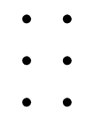

Letras
| a | b | c | d | e | f | g | h | i | j | k | l | m | n | o | p | q | r | s | t | u | v | w | x | y | z |
| a | b | c | d | e | f | g | h | i | j | k | l | m | n | o | p | q | r | s | t | u | v | w | x | y | z |
Mayúsculas
| { | {a | {b | {c | {d | {e | {f | {g | {h | {i | {j | {k | {l | {m | {n | {o | {p | {q | {r | {s | {t | {u | {v | {w | {x | {y | {z |
| Prefijo ({) | A | B | C | D | E | F | G | H | I | J | K | L | M | N | O | P | Q | R | S | T | U | V | W | X | Y | Z |
Dígitos
| # | #a | #b | #c | #d | #e | #f | #g | #h | #i | #j |
| Prefijo (#) | 0 | 1 | 2 | 3 | 4 | 5 | 6 | 7 | 8 | 9 |
Carácteres de la fuente digital
|  |
" | # | & | % | ' | * | + | , | - | . | 0 | 1 | 2 | 3 | 4 | 5 | 6 | 7 | 8 | 9 | : | ; | < | = | > | ? | @ | \ | / | ^ | _ | { | } |
| Espacio | " | # | & | % | ' | * | + | , | - | . | 0 | 1 | 2 | 3 | 4 | 5 | 6 | 7 | 8 | 9 | : | ; | < | = | > | ? | @ | \ | / | ^ | _ | { | } |
Signos de puntuación
| . | , | ; | : | - | = | ? | ? | + | + | < | 2 | Ì | ... |
| . | , | ; | : | - | = | ¿ | ? | ¡ | ! | " | ( | ) | ... |
Signos diacríticos
| á | é | í | ó | ú | ü | ñ |
| á | é | í | ó | ú | ü | ñ |
| à | \ | é | í | 7 | 9 | ò | ú | ü | & |
| à | é | è | í | ï | ó | ò | ú | ü | Ç |